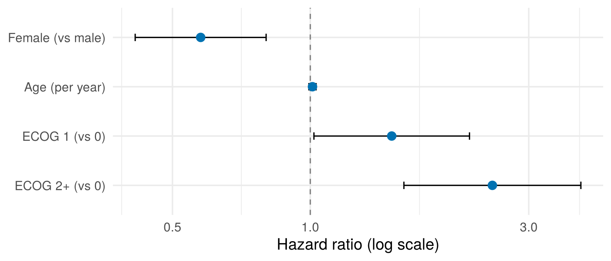
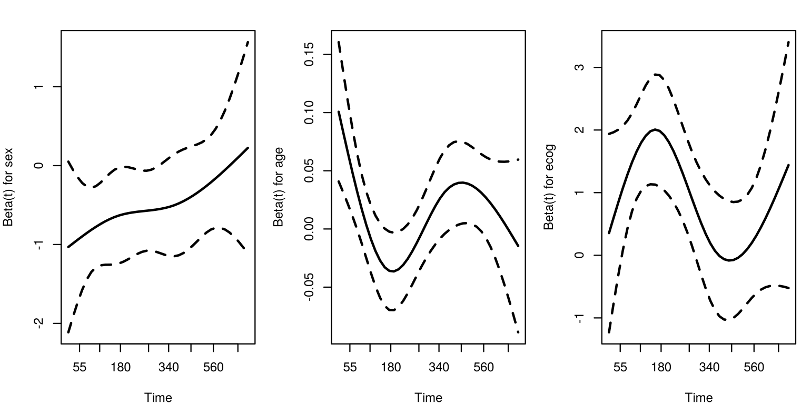
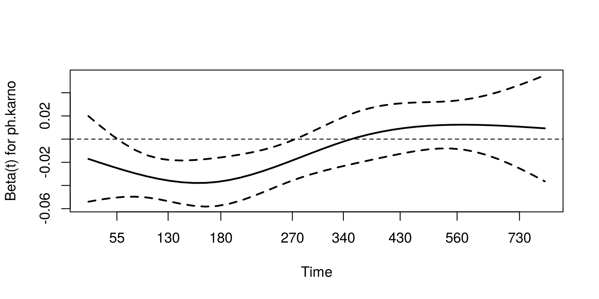
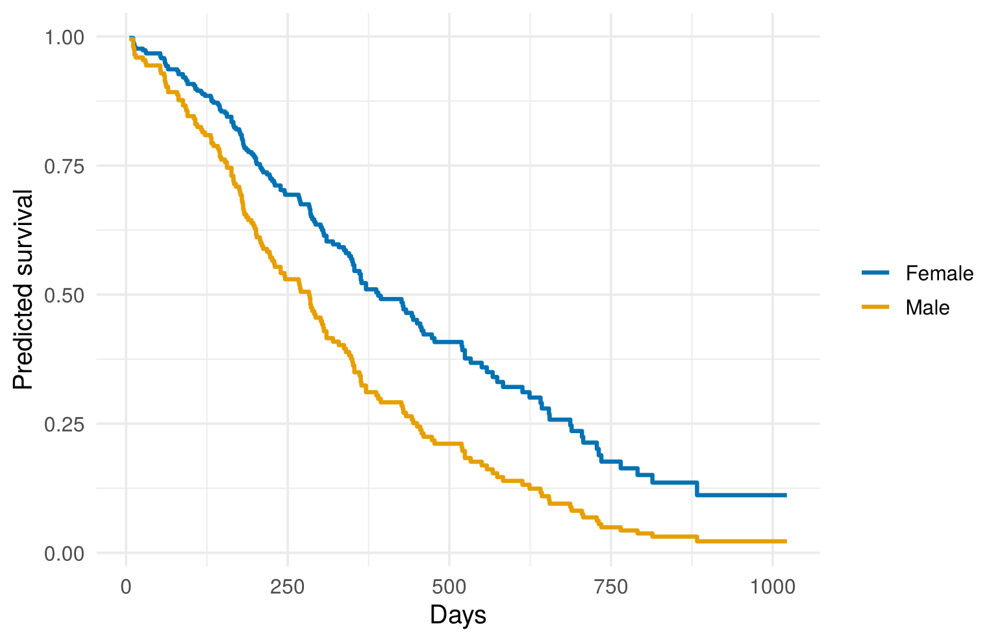

quiz([
{
"q": "On a Kaplan–Meier curve, what happens at the time a patient is censored?",
"options": [
"The curve drops",
"The curve stays level, and the patient leaves the risk set",
"The curve rises",
"The patient is counted as an event"
],
"answer": 1,
"why": "No event happened, so there's no drop. The patient simply stops counting towards the number at risk. The + marks on a KM plot show where this happens.",
"hints": [
"Only events make the curve drop.",
"",
"A survival curve can never go up.",
"Censored patients are never counted as events."
]
},
{
"q": "In plain words, what is the hazard?",
"options": [
"The proportion of patients still alive",
"The event rate among the people still at risk",
"The total number of deaths",
"The median survival time"
],
"answer": 1,
"why": "The survival curve shows the proportion still alive. The hazard shows how fast events are happening *right now* among those who've survived so far.",
"hints": [
"That's the survival curve, S(t).",
"",
"A count of deaths ignores how many people were at risk, and when.",
"The median is a single summary of the survival curve."
]
}
])3 Cox proportional hazards regression
Warm-up: remember Chapter 2?
Two quick questions to bring back the key ideas from last time.
3.1 Hazards and hazard ratios
You met the hazard informally in Section 2.4.1: the death rate among people who are still alive. More precisely, the hazard \(h(t)\) is the instantaneous rate of the event at time \(t\), among people still event-free just before \(t\). Think of it as “the risk right now, given you’ve made it this far”. It is a rate, not a probability, so it can be bigger than 1.
The log-rank test (Chapter 2) can tell us whether two groups differ. The Cox model goes further. It tells us by how much (as a hazard ratio), and it can include several variables at once, so each effect is adjusted for the others.
The Cox model says that each person’s hazard is a shared baseline hazard \(h_0(t)\) multiplied by a factor that depends on their covariates:
\[ h(t \mid x) = h_0(t)\, \exp(\beta_1 x_1 + \beta_2 x_2 + \dots) \]
- \(\exp(\beta_k)\) is a hazard ratio (HR). It is the multiplicative change in the hazard for a one-unit increase in \(x_k\), holding the other covariates fixed.
- HR = 1 means no association. HR < 1 means lower hazard (protective). HR > 1 means higher hazard.
- \(h_0(t)\) is never estimated or assumed to have any shape. This is why the Cox model is called semi-parametric, and why it is so widely used.
ImportantThe key assumption: proportional hazards (PH)
The HR is assumed to be constant over time. If women have 0.6 times the hazard of men at 1 month, they also have 0.6 times the hazard at 2 years. The hazards can rise and fall freely over time, but they have to rise and fall together.
A common misinterpretation: “HR = 0.6” does not mean “40% fewer people die”, or “people live 40% longer”. It means the rate of death at any moment is 40% lower. The effect on the proportion surviving at time \(t\) depends on the baseline hazard, and you can see it by plotting survival curves (see Section 3.7).
3.2 Interactive app: proportional hazards explorer
The left-hand plots show the true hazards and survival curves for two groups. The baseline hazard comes from a Weibull distribution:
- shape < 1: hazard falls over time (e.g. risk after surgery);
- shape = 1: constant hazard;
- shape > 1: hazard rises over time (e.g. ageing).
Tick Allow non-proportional hazards to give the treatment a different HR before and after a change-point. Then compare how a single Cox HR, fitted to a simulated sample, summarises the effect.
TipThings to try
For each one, predict first: decide what you expect to see, then pick the scenario and check. Committing to a prediction, even a wrong one, makes the result stick.
- Baseline shape. Predict: if the hazard falls steeply over time, or rises steeply, will the estimated HR change? Then pick Falling hazard (shape 0.5) and Rising hazard (shape 2.5), and compare the Cox estimate with the Default.
- The log(−log) plot. On the Default scenario, look at the third plot. Predict: what will happen to these two lines when hazards are not proportional? Keep your answer for item 3.
- Non-proportional hazards. Predict: if treatment halves the hazard for 2 years and then raises it by 50%, what will the KM curves look like, and what single HR will the Cox model report? Then pick Benefit that reverses (non-PH).
3.3 Fitting a Cox model in R
3.3.1 One covariate
cox_sex <- coxph(Surv(time, status) ~ sex, data = lung)
summary(cox_sex)#> Call:
#> coxph(formula = Surv(time, status) ~ sex, data = lung)
#>
#> n= 228, number of events= 165
#>
#> coef exp(coef) se(coef) z Pr(>|z|)
#> sexFemale -0.5310 0.5880 0.1672 -3.176 0.00149 **
#> ---
#> Signif. codes: 0 '***' 0.001 '**' 0.01 '*' 0.05 '.' 0.1 ' ' 1
#>
#> exp(coef) exp(-coef) lower .95 upper .95
#> sexFemale 0.588 1.701 0.4237 0.816
#>
#> Concordance= 0.579 (se = 0.021 )
#> Likelihood ratio test= 10.63 on 1 df, p=0.001
#> Wald test = 10.09 on 1 df, p=0.001
#> Score (logrank) test = 10.33 on 1 df, p=0.001From a hazard ratio to a percentage
The percentage change in the hazard is always \((\text{HR} - 1) \times 100\%\):
| HR | Percentage change | In words |
|---|---|---|
| 0.59 | \((0.59 - 1) \times 100 = -41\%\) | 41% lower hazard |
| 1.00 | 0% | no difference |
| 1.50 | +50% | 50% higher hazard |
| 2.50 | +150% | 150% higher hazard, or “2.5 times the hazard” |
So when HR < 1, the reduction is \(1 - \text{HR}\), and when HR > 1, the increase is \(\text{HR} - 1\). Three things to watch:
- Use the HR (
exp(coef)), not the coefficient (coef). The coefficient is the log HR. Here \(\hat\beta = -0.531\), which is not a 53% reduction. - It isn’t symmetric when you flip the comparison. Women vs men is HR = 0.59, but men vs women is \(1/0.59 = 1.70\): men have a 70% higher hazard, not 41% higher. Both describe the same data. R prints this reverse HR in the
exp(-coef)column ofsummary(). Pick the comparison that matches your research question, and describe it in that direction. - Convert the CI the same way. A 95% CI of 0.42 to 0.82 means a reduction of between 18% and 58%.
And remember, it’s the hazard (the instantaneous rate) that is 41% lower. That isn’t the same as 41% fewer deaths (see the common misinterpretation at the start of this chapter).
3.3.2 Several covariates
Now add age and ECOG performance status (0 = fully active, higher = more impaired). Only one patient has ECOG = 3, so we group it with 2 to avoid an unstable estimate.
lung <- lung |>
mutate(ecog = factor(pmin(ph.ecog, 2), levels = 0:2,
labels = c("0 (active)", "1", "2+")))
cox_multi <- coxph(Surv(time, status) ~ sex + age + ecog, data = lung)
cox_multi#> Call:
#> coxph(formula = Surv(time, status) ~ sex + age + ecog, data = lung)
#>
#> coef exp(coef) se(coef) z p
#> sexFemale -0.551322 0.576188 0.167987 -3.282 0.00103
#> age 0.011031 1.011092 0.009297 1.186 0.23544
#> ecog1 0.409461 1.506006 0.199596 2.051 0.04022
#> ecog2+ 0.915752 2.498654 0.227042 4.033 5.5e-05
#>
#> Likelihood ratio test=30.08 on 4 df, p=4.704e-06
#> n= 227, number of events= 164
#> (1 observation deleted due to missingness)broom::tidy() gives a tidy table with hazard ratios and CIs:
tidy(cox_multi, exponentiate = TRUE, conf.int = TRUE)#> # A tibble: 4 x 7
#> term estimate std.error statistic p.value conf.low conf.high
#> <chr> <dbl> <dbl> <dbl> <dbl> <dbl> <dbl>
#> 1 sexFemale 0.576 0.168 -3.28 0.00103 0.415 0.801
#> 2 age 1.01 0.00930 1.19 0.235 0.993 1.03
#> 3 ecog1 1.51 0.200 2.05 0.0402 1.02 2.23
#> 4 ecog2+ 2.50 0.227 4.03 0.0000550 1.60 3.90exponentiate = TRUE converts the coefficients to hazard ratios (estimate), and conf.int = TRUE adds their confidence intervals (conf.low, conf.high).
Interpretation, each holding the other variables constant:
- Sex: women have about 0.58 times the hazard of men.
- Age: HR = 1.011 per year. Per-year HRs look tiny, so report them per 10 years: \(1.011^{10} \approx 1.12\), a 12% higher hazard per decade (not statistically significant here).
- ECOG: compared with ECOG 0, ECOG 1 has HR ≈ 1.5 and ECOG 2+ has HR ≈ 2.5.
To get the HR per 10 years directly in R, use exp(10 * coef(cox_multi)["age"]), or rescale age before fitting (mutate(age10 = age / 10)).
3.3.3 A forest plot
Show the plotting code
tidy(cox_multi, exponentiate = TRUE, conf.int = TRUE) |>
mutate(term = recode(term, sexFemale = "Female (vs male)",
age = "Age (per year)",
ecog1 = "ECOG 1 (vs 0)", `ecog2+` = "ECOG 2+ (vs 0)")) |>
mutate(term = factor(term, levels = rev(term))) |>
ggplot(aes(x = estimate, y = term)) +
geom_vline(xintercept = 1, linetype = "dashed", colour = "grey50") +
geom_errorbar(aes(xmin = conf.low, xmax = conf.high), width = 0.15, orientation = "y") +
geom_point(size = 3, colour = "#0072B2") +
scale_x_log10() +
labs(x = "Hazard ratio (log scale)", y = NULL) +
theme_minimal(base_size = 13)
3.4 Comparing three or more groups
In Chapter 2 (Section 2.6), the log-rank test showed that survival differed between the three ECOG groups, and pairwise tests showed which groups differed. A Cox model adds how much they differ. Put the group in as a factor:
coxph(Surv(time, status) ~ ecog, data = lung) |>
tidy(exponentiate = TRUE, conf.int = TRUE)#> # A tibble: 2 x 7
#> term estimate std.error statistic p.value conf.low conf.high
#> <chr> <dbl> <dbl> <dbl> <dbl> <dbl> <dbl>
#> 1 ecog1 1.45 0.199 1.85 0.0638 0.979 2.13
#> 2 ecog2+ 2.54 0.223 4.17 0.0000311 1.64 3.93Each HR compares one group with the reference group, the first level of the factor: here ECOG 0. Patients with ECOG 1 had about 1.45 times the hazard of death of ECOG 0 patients (95% CI 0.98–2.13), and patients with ECOG 2+ about 2.5 times (1.64–3.93). These are unadjusted HRs. The model in the previous section gave similar values after adjusting for sex and age.
R uses the first level of the factor as the reference. To compare against a different group, use relevel(), e.g. mutate(ecog = relevel(ecog, ref = "1")).
3.4.1 Ordered groups: a test for trend
When the groups have a natural order (age bands, tumour grade, ECOG score), the usual question is whether risk rises steadily across them. A test for trend puts all the evidence into this single question, so it is more powerful than the omnibus log-rank test. To do it, give the ordered groups scores 1, 2, 3, … and fit a Cox model with the score as a number. Here are three age bands in lung:
lung <- lung |>
mutate(age_grp = cut(age, c(0, 60, 70, Inf), right = FALSE,
labels = c("<60", "60-69", "70+")))
survdiff(Surv(time, status) ~ age_grp, data = lung) # omnibus log-rank test#> Call:
#> survdiff(formula = Surv(time, status) ~ age_grp, data = lung)
#>
#> N Observed Expected (O-E)^2/E (O-E)^2/V
#> age_grp=<60 83 56 64.6 1.1357 1.877
#> age_grp=60-69 89 63 65.0 0.0616 0.103
#> age_grp=70+ 56 46 35.4 3.1492 4.049
#>
#> Chisq= 4.4 on 2 degrees of freedom, p= 0.1trend <- coxph(Surv(time, status) ~ as.numeric(age_grp), data = lung)
summary(trend)$sctest # test for trend#> test df pvalue
#> 3.87513844 1.00000000 0.04900627The omnibus test is not significant (\(p = 0.11\)), but the trend test is (\(p = 0.049\)). The omnibus test spreads its power across every possible pattern of differences. The trend test looks only for a steady increase, which is the pattern you’d expect for age. (sctest is the score test. For a single score variable, it is the log-rank test for trend.)
3.5 Checking the proportional hazards assumption
cox.zph() tests whether each covariate’s effect changes over time, using scaled Schoenfeld residuals. A small p-value suggests the HR is not constant.
zph <- cox.zph(cox_multi)
zph#> chisq df p
#> sex 2.54 1 0.11
#> age 0.20 1 0.65
#> ecog 3.04 2 0.22
#> GLOBAL 5.24 4 0.26None of the tests is significant, so we have no strong evidence against PH. Always look at the plots too. The tests have low power in small datasets and are “too sensitive” in big ones. Each plot shows the estimated log-HR over time. Under PH, the smooth curve should be roughly horizontal.
par(mfrow = c(1, 3), mar = c(4, 4, 2, 1))
plot(zph, resid = FALSE, lwd = 2)
NoteWhat to do if PH fails
- Stratify on that variable:
coxph(Surv(time, status) ~ treat + strata(site)). Each stratum gets its own baseline hazard. The cost is that you get no HR for the stratification variable. - Split follow-up time and estimate a separate HR for each period (
survSplit()), e.g. an HR for 0–6 months and another for after 6 months. There’s a worked example in Section 3.6. - Report a different effect measure, such as survival differences at fixed times, or the restricted mean survival time (RMST) (see Section 7.5).
More advanced options include time-varying coefficients (tt() in coxph()).
For more, including worked examples of tt(), the RMST and accelerated failure time models, see Chapter 10.
3.5.1 Practice: fill in the blanks
This is a live exercise: edit the code, click Run Code, and your answer is checked automatically. See Section 1.4.1 if you haven’t used one before.
ph.karno is the physician’s Karnofsky score: 0–100, higher = fitter. Replace each ______, then click Run Code. (The first run downloads the broom package, so it takes a little longer.)
NoteHint 1
The variable to add is ph.karno. exponentiate needs TRUE to turn coefficients into hazard ratios.
NoteHint 2
cox.zph() takes the fitted model, which here is called m.
TipSolution
m <- coxph(Surv(time, status) ~ sex + ph.karno, data = lung)
tidy(m, exponentiate = TRUE, conf.int = TRUE)
exp(10 * coef(m)["ph.karno"])
cox.zph(m)Women had HR = 0.60 (95% CI 0.43 to 0.84) compared with men with the same Karnofsky score: about a 40% lower hazard. Each 10-point higher score has HR ≈ 0.86, about a 14% lower hazard, so a higher (fitter) score is good news. cox.zph() gives p = 0.005 for ph.karno. Its effect seems to change over follow-up, so a single HR doesn’t tell the whole story. The worked example just below shows what to do about it.
3.6 Worked example: an effect that fades
In the practice above, cox.zph() flagged the Karnofsky score (p = 0.005). Here is how to deal with that, using the second option in the “What to do if PH fails” box: split follow-up time and estimate a separate HR for each period.
First look at the plot. It shows how the log-HR for ph.karno changes over follow-up:
m_karno <- coxph(Surv(time, status) ~ sex + ph.karno,
data = lung)
plot(cox.zph(m_karno)[2], resid = FALSE, lwd = 2)
abline(h = 0, lty = 2)
Beta(t) is the estimated log-HR (per point of the score) at each time. For the first 6 months or so the line is well below zero: a higher score is strongly protective. After that it rises, and reaches zero (no effect) at about a year. So we split each patient’s follow-up at 180 days. survSplit() gives each patient one row per period, with tstart and time marking where each period begins and ends. This is the counting-process form of survival data, which you’ll meet again in Section 4.3:
lung_split <- survSplit(Surv(time, status) ~ ., data = lung,
cut = 180, episode = "period")
lung_split$period <- factor(lung_split$period, levels = 1:2,
labels = c("0-6 months",
"after 6 months"))
# Patient 1 died at 306 days, so has two rows
lung_split[1:2, c("tstart", "time", "status", "period")]#> tstart time status period
#> 1 0 180 0 0-6 months
#> 2 180 306 1 after 6 monthsThen let the effect of ph.karno differ by period. ph.karno:period gives a separate Karnofsky HR for each period:
m_period <- coxph(Surv(tstart, time, status) ~
sex + ph.karno:period,
data = lung_split)
# HR per 10 points of the Karnofsky score, in each period
exp(10 * coef(m_period)[-1])#> ph.karno:period0-6 months ph.karno:periodafter 6 months
#> 0.6939382 0.9612584In the first 6 months, each 10 points higher on the Karnofsky score goes with a 31% lower hazard (HR 0.69, 95% CI 0.58 to 0.84). After 6 months the effect has almost gone (HR 0.96, 95% CI 0.83 to 1.11). That makes clinical sense: a doctor’s rating of how well a patient is now says a lot about the next few months, and less about the more distant future. A single HR (0.86) would have averaged these two quite different effects. cox.zph(m_period) now shows no evidence against PH (global p = 0.10).
How to choose the cut point? Use the plot, and clinical knowledge, and keep it simple: one or two cut points, chosen before looking at the p-values.
3.7 Adjusted survival curves
A Cox model can predict survival curves for chosen covariate patterns. These are often easier to interpret than HRs:
# Two example patients: identical except for sex
newdat <- data.frame(sex = c("Male", "Female"), age = 65, ecog = "1")
pred <- survfit(cox_multi, newdata = newdat)
# One column of predicted survival per patient: put them in a data frame
pred_df <- data.frame(
time = rep(pred$time, 2),
surv = c(pred$surv[, 1], pred$surv[, 2]),
sex = rep(c("Male", "Female"), each = length(pred$time))
)
ggplot(pred_df, aes(x = time, y = surv, colour = sex)) +
geom_step(linewidth = 1) +
scale_colour_manual(values = c(Male = "#E69F00", Female = "#0072B2")) +
labs(x = "Days", y = "Predicted survival", colour = NULL) +
theme_minimal(base_size = 13)
summary() gives the predicted survival at chosen times:
summary(pred, times = 365)#> Call: survfit(formula = cox_multi, newdata = newdat)
#>
#> time n.risk n.event survival1 survival2
#> 365 65 120 0.324 0.522For a 65-year-old with ECOG 1, the model predicts 1-year survival of 32% for a man (survival1, the first row of newdat) and 52% for a woman (survival2). That’s a 20-percentage-point difference, which is easier to explain than “HR 0.58”. Notice that the gap in survival depends on which patient you pick: for a patient with a worse prognosis, the same HR gives a different gap. These curves are for particular patients, not averages over the whole group.
3.8 Writing it up
A sentence template for a hazard ratio:
In a Cox model adjusted for [other variables], [group] was associated with a [X]% [lower/higher] hazard of [event] compared with [reference group] (HR [value], 95% CI [a] to [b], p = [value]).
For a continuous variable, give the HR for a meaningful change, such as 10 years of age. Also say how you checked proportional hazards. Filled in for cox_multi:
In a Cox model adjusted for age and ECOG performance status, women had a 42% lower hazard of death than men (HR 0.58, 95% CI 0.41 to 0.80, p = 0.001). Each additional 10 years of age was associated with a non-significant 12% higher hazard (HR 1.12, 95% CI 0.93 to 1.34). Compared with ECOG 0, the hazard was higher for ECOG 1 (HR 1.51, 95% CI 1.02 to 2.23) and ECOG 2+ (HR 2.50, 95% CI 1.60 to 3.90). Tests and plots of scaled Schoenfeld residuals showed no evidence against proportional hazards.
3.9 Good practice
- Events per variable. Aim for at least 10–20 events (not patients) per estimated coefficient. A factor with \(k\) levels uses \(k-1\).
- Missing data.
coxph()silently drops incomplete rows. Checknandnumber of eventsin the output. One row was dropped above. Chapter 11 explains when this matters and what to do instead.
Quick quiz
Choose an answer to each question. You’ll get instant feedback and can change your answer as often as you like.
3.10 Exercise
3.10.1 Exercise 3.1
cox_multi, the model from this chapter (sex + age + ecog), is already fitted in each box. The exercise has three parts. Each box is checked separately.
Part 1: add weight loss
Add wt.loss (weight loss in the last 6 months, in pounds) to the model. Report its HR per 10 lb, and how many observations are used. Then check proportional hazards for the new model (make that the last line).
NoteHint 1
The formula is the one from cox_multi with + wt.loss added: sex + age + ecog + wt.loss.
NoteHint 2
Proportional hazards are checked with cox.zph(m2).
TipSolution
m2 <- coxph(Surv(time, status) ~ sex + age + ecog + wt.loss, data = lung)
exp(10 * coef(m2)["wt.loss"])
m2$n
cox.zph(m2)Adding wt.loss drops patients with missing weight loss, so 213 observations are used instead of 227. Its HR per 10 lb is 0.91 (95% CI 0.80 to 1.04), close to 1 and not significant. cox.zph() shows no evidence against proportional hazards (global p = 0.36).
Part 2: stratify by ECOG
Refit cox_multi stratified by ecog, instead of adjusting for it. How does the HR for sex change?
NoteHint 1
Stratification uses strata() around the variable’s name.
TipSolution
coxph(Surv(time, status) ~ sex + age + strata(ecog), data = lung)Stratifying by ECOG gives each ECOG group its own baseline hazard, so there is no HR for ECOG any more. The HR for sex barely changes: 0.57, compared with 0.58 in cox_multi.
Part 3: test for trend
ECOG is ordered (0, 1, 2+). Carry out a test for trend across the ecog groups, and compare it with the omnibus log-rank test (Section 3.4.1 did the same for age bands).
NoteHint 1
To turn the ordered groups into scores 1, 2, 3, use as.numeric(ecog).
NoteHint 2
The test for trend is the score test, stored as sctest in the model summary.
TipSolution
survdiff(Surv(time, status) ~ ecog, data = lung)
trend <- coxph(Surv(time, status) ~ as.numeric(ecog), data = lung)
summary(trend)$sctestThe omnibus test gives \(\chi^2 \approx 19.0\) on 2 degrees of freedom. The trend test gives \(\chi^2 \approx 17.2\) on just 1 degree of freedom. Almost all of the difference between the groups is a steady worsening of survival as ECOG rises.
3.11 Summary
Answering the question. After adjusting for age and ECOG, women had a hazard ratio of 0.58 (95% CI 0.41 to 0.80) compared with men. At any point in time, their hazard of death was about 42% lower. The difference wasn’t explained by age or fitness.
3.12 Further reading
All of these are free to read online unless marked otherwise. The whole book’s reading list, grouped by topic, is in Appendix C.
- Bradburn et al. (2003a): Start here. A gentle introduction to Cox regression and building a model with several variables. Part II of the series from Chapter 1.
- Bradburn et al. (2003b): Part III of the same series: choosing which variables to include, and checking a model’s assumptions and fit, including proportional hazards.
- Spruance et al. (2004): What a hazard ratio does and doesn’t tell you, and how it relates to probabilities and median survival times.
- Stensrud and Hernán (2020): A short, thought-provoking piece. Hazard ratios often change over time, so the authors suggest showing survival curves rather than relying on a single HR and a test of proportional hazards. (May need institutional access.)
- Therneau (n.d.): More advanced. The survival package author’s own guide, with much more on Cox models and their extensions in R.